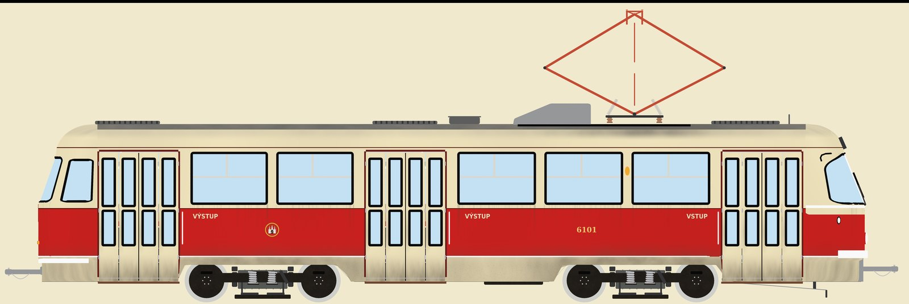
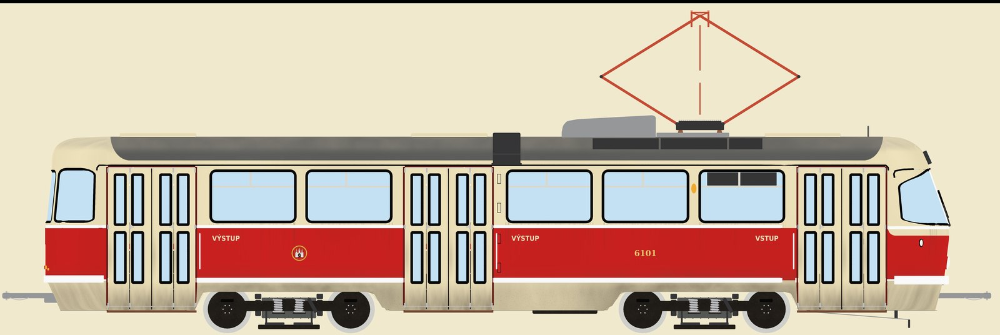

Every feature measured the same way on the drawing and on a flat-colour render of the model, in millimetres: along the car from its centre (+ towards the front) and up from the top of rail.


Drawing scale from its own dimensions: the bogie centres 6,400 mm apart give 6.0 mm per pixel, and the body ends and coupler heads then fall exactly on ±7,000 and ±7,600 mm. The rail top is the top of the ground line. The model is rendered orthographically at 2 mm per pixel with flat colours. Wheel and bogie positions are not measured: they follow the given dimensions (6,400 / 1,900 mm) exactly. Both are reduced to the same colour classes, and edges of thin outlined items (beading, bumper, flap) are taken at the centre of their outline strokes. Deviation = model − drawing.
| Feature | Drawing | Before | Dev. | After | Dev. |
|---|---|---|---|---|---|
| Passenger windows | |||||
| window 1 rear edge | -4 384 | -4 382 | 2 | -4 384 | 0 |
| window 1 front edge | -3 122 | -3 152 | -30 | -3 122 | 0 |
| window 1 top | 2 482 | 2 514 | 32 | 2 480 | -2 |
| window 1 bottom | 1 729 | 1 686 | -43 | 1 726 | -3 |
| window 1 width 20 mm below top | 1 232 | 1 230 | -2 | 1 230 | -2 |
| window 2 rear edge | -2 907 | -2 928 | -21 | -2 906 | 1 |
| window 2 front edge | -1 645 | -1 698 | -53 | -1 646 | -1 |
| window 2 top | 2 482 | 2 514 | 32 | 2 480 | -2 |
| window 2 bottom | 1 729 | 1 686 | -43 | 1 726 | -3 |
| window 2 width 20 mm below top | 1 220 | 1 230 | 10 | 1 232 | 12 |
| window 3 rear edge | 179 | 138 | -41 | 180 | 1 |
| window 3 front edge | 1 441 | 1 392 | -49 | 1 440 | -1 |
| window 3 top | 2 476 | 2 514 | 38 | 2 480 | 4 |
| window 3 bottom | 1 723 | 1 686 | -37 | 1 726 | 3 |
| window 3 width 20 mm below top | 1 232 | 1 254 | 22 | 1 232 | 0 |
| window 4 rear edge | 1 657 | 1 614 | -43 | 1 658 | 1 |
| window 4 front edge | 2 925 | 2 866 | -59 | 2 924 | -1 |
| window 4 top | 2 476 | 2 514 | 38 | 2 480 | 4 |
| window 4 bottom | 1 717 | 1 686 | -31 | 1 726 | 9 |
| window 4 width 20 mm below top | 1 232 | 1 252 | 20 | 1 238 | 6 |
| window 5 rear edge | 3 146 | 3 088 | -58 | 3 146 | 0 |
| window 5 front edge | 4 402 | 4 342 | -60 | 4 402 | 0 |
| window 5 top The drawing has a dark route board inside the top of this window. The model has it too, but the flat-colour render shows glass as opaque, so the board cannot be seen. | 2 189 | 2 514 | 325 | 2 480 | 291 |
| window 5 bottom | 1 723 | 1 686 | -37 | 1 726 | 3 |
| window 5 width 20 mm below top As above. | 1 256 | 1 254 | -2 | 1 224 | -32 |
| Doors | |||||
| rear door first pane rear edge | -5 856 | -5 890 | -34 | -5 860 | -4 |
| rear door last pane front edge | -4 773 | -4 710 | 63 | -4 770 | 3 |
| rear door upper panes | 4 | 4 | 0 | 4 | 0 |
| rear door upper pane top | 2 422 | 2 414 | -8 | 2 418 | -4 |
| rear door upper pane bottom | 1 693 | 1 646 | -47 | 1 684 | -9 |
| rear door lower pane top | 1 525 | 1 650 | 125 | 1 520 | -5 |
| rear door lower pane bottom | 796 | 976 | 180 | 784 | -12 |
| middle door first pane rear edge | -1 286 | -1 370 | -84 | -1 290 | -4 |
| middle door last pane front edge | -203 | -190 | 13 | -200 | 3 |
| middle door upper panes | 4 | 4 | 0 | 4 | 0 |
| middle door upper pane top | 2 416 | 2 414 | -2 | 2 418 | 2 |
| middle door upper pane bottom | 1 681 | 1 646 | -35 | 1 684 | 3 |
| middle door lower pane top | 1 519 | 1 650 | 131 | 1 520 | 1 |
| middle door lower pane bottom | 784 | 976 | 192 | 784 | 0 |
| front door first pane rear edge | 4 767 | 4 670 | -97 | 4 768 | 1 |
| front door last pane front edge | 5 862 | 5 850 | -12 | 5 860 | -2 |
| front door upper panes | 4 | 4 | 0 | 4 | 0 |
| front door upper pane top | 2 416 | 2 414 | -2 | 2 418 | 2 |
| front door upper pane bottom | 1 675 | 1 646 | -29 | 1 684 | 9 |
| front door lower pane top | 1 519 | 1 650 | 131 | 1 520 | 1 |
| front door lower pane bottom | 772 | 976 | 204 | 784 | 12 |
| Red band, strips and gutter | |||||
| red top at x -6.5 | 1 606 | 1 576 | -30 | 1 608 | 2 |
| red bottom at x -6.5 | 876 | 774 | -102 | 876 | 0 |
| strip top at x -6.5 | 876 | 774 | -102 | 876 | 0 |
| strip bottom at x -6.5 | 763 | 700 | -63 | 762 | -1 |
| red top at x -3.8 | 1 600 | 1 578 | -22 | 1 608 | 8 |
| red bottom at x -3.8 | 840 | 774 | -66 | 838 | -2 |
| strip top at x -3.8 | 846 | 774 | -72 | 838 | -8 |
| strip bottom at x -3.8 | 757 | 758 | 1 | 762 | 5 |
| red top at x -2.2 | 1 594 | 1 578 | -16 | 1 608 | 14 |
| red bottom at x -2.2 | 834 | 774 | -60 | 838 | 4 |
| strip top at x -2.2 | 837 | 774 | -63 | 838 | 1 |
| strip bottom at x -2.2 | 754 | 758 | 4 | 762 | 8 |
| red top at x +1.6 | 1 594 | 1 578 | -16 | 1 608 | 14 |
| red bottom at x +1.6 | 828 | 774 | -54 | 838 | 10 |
| strip top at x +1.6 | 828 | 774 | -54 | 838 | 10 |
| strip bottom at x +1.6 | 751 | 752 | 1 | 762 | 11 |
| red top at x +3.9 A local wobble in the drawing; the other five positions are within 11 mm. | 1 588 | 1 578 | -10 | 1 608 | 20 |
| red bottom at x +3.9 | 828 | 774 | -54 | 838 | 10 |
| strip top at x +3.9 | 828 | 774 | -54 | 838 | 10 |
| strip bottom at x +3.9 | 748 | 758 | 10 | 762 | 14 |
| red top at x +6.3 | 1 477 | 1 480 | 3 | 1 492 | 15 |
| red bottom at x +6.3 | 861 | 774 | -87 | 868 | 7 |
| strip top at x +6.3 | 861 | 774 | -87 | 868 | 7 |
| strip bottom at x +6.3 | 748 | 752 | 4 | 734 | -14 |
| gutter at x -3.8 | 2 599 | 2 581 | -18 | 2 585 | -14 |
| gutter at x -2.2 | 2 593 | 2 581 | -12 | 2 585 | -8 |
| gutter at x +1.6 | 2 593 | 2 581 | -12 | 2 585 | -8 |
| gutter at x +3.9 | 2 587 | 2 581 | -6 | 2 585 | -2 |
| Body outline | |||||
| body bottom at x -6.5 The front elevation puts the body bottom at 336 mm. The model keeps 334 mm, which suits both the front and the side reasonably. | 377 | 334 | -43 | 334 | -43 |
| body bottom at x -1.0 As above. | 389 | 334 | -55 | 334 | -55 |
| body bottom at x +0.0 As above. | 359 | 334 | -25 | 334 | -25 |
| body bottom at x +1.0 As above. | 359 | 334 | -25 | 334 | -25 |
| body bottom at x +6.4 As above. | 365 | 334 | -31 | 334 | -31 |
| roof top at x -3.5 The drawing's roof outline is drawn on top of the line. The model keeps the labelled 3,028 mm. | 3 050 | 3 028 | -22 | 3 028 | -22 |
| roof top at x -2.4 As above. | 3 050 | 3 028 | -22 | 3 028 | -22 |
| rear end at y 2.90 | -6 759 | -6 486 | 273 | -6 762 | -3 |
| front end at y 2.90 | 6 454 | 6 462 | 8 | 6 466 | 12 |
| rear end at y 2.60 | -6 855 | -6 694 | 161 | -6 854 | 1 |
| front end at y 2.60 As above. | 6 675 | 6 650 | -25 | 6 656 | -19 |
| rear end at y 2.30 | -6 879 | -6 764 | 115 | -6 866 | 13 |
| front end at y 2.30 The windscreen edge in the drawing has a wiper drawn along it. | 6 663 | 6 748 | 85 | 6 744 | 81 |
| rear end at y 2.00 Rear window wrap, 16 mm. | -6 914 | -6 868 | 46 | -6 898 | 16 |
| front end at y 2.00 As above. | 6 861 | 6 902 | 41 | 6 882 | 21 |
| front end at y 1.70 | 6 968 | 7 006 | 38 | 6 974 | 6 |
| rear end at y 1.45 | -6 968 | -7 004 | -36 | -6 954 | 14 |
| front end at y 1.45 | 6 968 | 6 998 | 30 | 6 962 | -6 |
| rear end at y 1.20 | -6 944 | -7 000 | -56 | -6 950 | -6 |
| front end at y 1.20 | 6 938 | 6 998 | 60 | 6 932 | -6 |
| rear end at y 0.95 | -6 950 | -7 000 | -50 | -6 950 | 0 |
| front end at y 0.95 | 6 908 | 6 998 | 90 | 6 902 | -6 |
| rear end at y 0.80 | -6 968 | -7 000 | -32 | -6 978 | -10 |
| front end at y 0.80 | 6 962 | 7 050 | 88 | 6 960 | -2 |
| front end at y 0.65 | 6 831 | 6 974 | 143 | 6 834 | 3 |
| rear end at y 0.40 | -6 747 | -7 252 | -505 | -6 750 | -3 |
| front end at y 0.40 | 6 771 | 6 974 | 203 | 6 768 | -3 |
| Couplers | |||||
| rear coupler tip x | -7 614 | -7 568 | 46 | -7 616 | -2 |
| rear coupler centre y | 574 | 485 | -89 | 561 | -13 |
| front coupler tip x | 7 614 | 7 568 | -46 | 7 616 | 2 |
| front coupler centre y | 559 | 523 | -36 | 561 | 2 |
| Roof equipment | |||||
| roof cover rear end | 999 | 1 076 | 77 | 1 006 | 7 |
| roof cover front end | 2 458 | 2 360 | -98 | 2 450 | -8 |
| roof cover top | 3 361 | 3 380 | 19 | 3 348 | -13 |
| roof edge box 1 rear | 1 477 | – | – | 1 478 | 1 |
| roof edge box 1 front | 2 494 | – | – | 2 494 | 0 |
| roof edge box 2 rear | 2 524 | – | – | 2 524 | 0 |
| roof edge box 2 front | 3 547 | – | – | 3 546 | -1 |
| roof edge box 3 rear | 3 577 | – | – | 3 578 | 1 |
| roof edge box 3 front | 4 091 | – | – | 4 090 | -1 |
| box over middle door rear | -60 | – | – | -60 | 0 |
| box over middle door front | 365 | – | – | 366 | 1 |
| box over middle door top | 3 092 | – | – | 3 090 | -2 |
| box over middle door bottom | 2 572 | – | – | 2 578 | 6 |
| roof hatch rear rear | -5 808 | -6 038 | -230 | -5 806 | 2 |
| roof hatch rear front | -4 624 | -4 942 | -318 | -4 626 | -2 |
| roof hatch middle rear | -1 322 | -1 338 | -16 | -1 320 | 2 |
| roof hatch middle front | -138 | -242 | -104 | -140 | -2 |
| roof hatch front rear | 4 121 | 4 402 | 281 | 4 128 | 7 |
| End windows | |||||
| rear corner window rear edge | -6 777 | -6 852 | -75 | -6 762 | 15 |
| rear corner window front edge | -6 209 | -6 104 | 105 | -6 218 | -9 |
| rear corner window top | 2 506 | 2 250 | -256 | 2 504 | -2 |
| rear corner window bottom | 1 735 | 1 726 | -9 | 1 730 | -5 |
| cab side window rear edge The front elevation and the side elevation disagree on how far round the windscreen wraps. The model sits between them. | 6 215 | 6 378 | 163 | 6 228 | 13 |
| cab side window front edge As above. | 6 759 | 6 828 | 69 | 6 812 | 53 |
| cab side window top Windscreen corner radius set by the front elevation. | 2 410 | 2 412 | 2 | 2 346 | -64 |
| cab side window bottom The front elevation puts the bottom of the glass at 1,682 mm. The model follows it. | 1 705 | 1 710 | 5 | 1 720 | 15 |